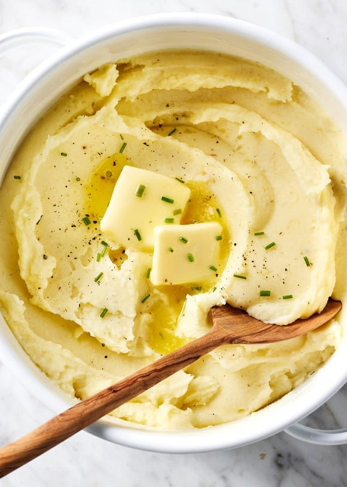

Home
Mashed Potatos

Description
Learn how to make the best mashed potatoes with this easy
recipe! Rich, creamy, and flavorful, they're always a crowd-pleasing side dish.
Ingredients
- 4 lbs Russet potatos
- 1 Cup of whole milk
- 1 tsp kosher salt
- 1/2 tsp ground black pepper
- 1 stick of butter
- 1/4 Cup of sour cream
Steps
- Peal and cube potatos
- Place potatos in a stock with cold water over medium heat
- Bring to a boil and simmer until potatos are fork tender
- Drain potatos and mash in the stock pot
- Add butter and allow to melt
- Once butter is melted, add in the milk and sour cream while stirring to combine
- Add salt and pepper to taste